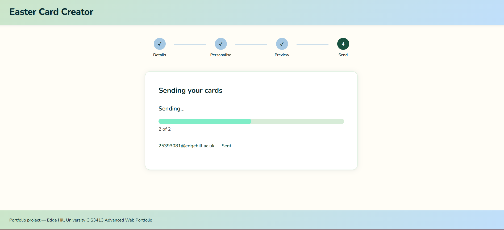
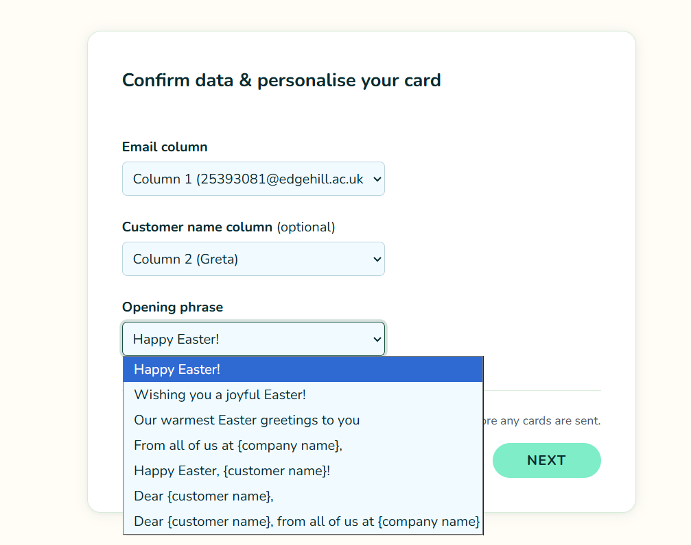
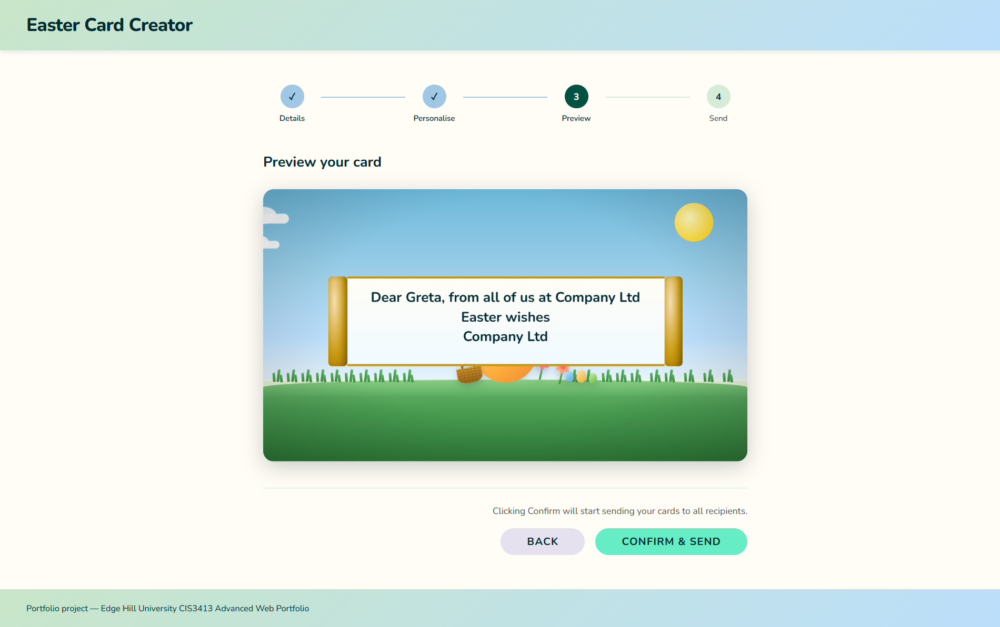

Animated Easter Card Creator
A multi-page tool for businesses to create and send personalised animated Easter cards in bulk, built as a single HTML file with no external dependencies.
- HTML5
- CSS3
- JavaScript
- CSS Animations
- CSV / JSON
Overview
A browser-based tool for businesses to send personalised seasonal cards to a recipient list without needing a subscription service or a developer. The company works through five steps; recipients get an email link that opens directly to their personalised animated card.
The Problem
- Personalised seasonal card tools require paid subscriptions, design accounts or specific platforms
- Brief requirement: self-contained, browser-only — no accounts, no installs, no network connection needed
- Hard technical constraint: the entire creator had to be a single HTML file — no separate stylesheets, no external scripts
Design
Two-file architecture
- index.html — the creator tool the company uses
- card.html — the recipient-facing card, receives URL parameters
Keeping them separate meant the animation could be built and polished independently from the sending logic, and kept the recipient file clean and fast to load.
Creator flow
Strict forward-only sequence until preview — prevents invalid state rather than handling it reactively.
- Landing page
- Company details input (name, website URL, CSV/JSON upload)
- Card customisation (email column, name column, phrase selection)
- Preview
- Sending
Animation sequence
Planned on paper before any CSS was written — each beat mapped to a keyframe percentage before touching code.
- Egg rolls in from a distance toward the viewer
- Egg cracks apart with a burst of confetti
- Easter bunny climbs out
- Bunny retrieves items from inside the broken egg — basket, flowers, smaller eggs
- Bunny pulls out a scroll; scroll unravels and zooms toward the viewer showing the personalised message and optional company link
Other design decisions
- Spring palette (yellows, soft greens, warm pinks) — matches the Easter context
- System sans-serif font stack — external fonts would violate the single-file constraint on card.html
- Step progress indicator via CSS counter on an ordered list — no JavaScript class toggling needed
- JSON support added alongside CSV — same FileReader call, different parse path; covers CRM exports as well as spreadsheets
The Solution
File parsing (input step)
- FileReader API reads the file entirely client-side — data never leaves the browser
- UTF-8 BOM characters stripped before parsing — prevents Excel-exported files from producing a corrupt first column header
- Empty rows filtered out — prevents blank recipient entries
Customisation (selections step)
- Email column: company chooses which column contains addresses; application validates the column actually contains valid email format — prevents silent misconfiguration producing undeliverable emails
- Name column: optional; enables the card to address each recipient individually
- Phrase: chosen from preset templates with
{company}and{name}placeholders — substituted at send time per recipient
Data sanitisation before dispatch
String.trim()on names and phrase values — removes whitespaceencodeURIComponent()on all URL parameters — without encoding, a name containing&,=or#would corrupt the URL structure and pass the wrong value to card.html
Per-recipient personalisation
Each recipient gets one mailto link. The email body contains a link to card.html with their name, the substituted phrase and the company's details as URL parameters. card.html reads those parameters on load and injects them into the animation — no server, no database.

Development Process
- Animation built first — standalone proof of concept on card.html, isolated from creator logic; once the full sequence was stable and timing felt right, the creator was built on top
- Scroll reveal timing — most complex challenge: the text must be readable before the zoom keyframe begins; small changes to earlier phases shifted every percentage that followed. Solution: treat each beat as a fixed anchor point and calculate percentages backward from the end
- Wizard focus management — on each step advance, JavaScript sets
tabindex="-1"on the incoming step's heading and calls.focus(); without this, screen reader users advance through the form with no indication the page has changed - ARIA error handling —
aria-invalid="true"+aria-describedbyon the file upload input; if the file has no recognisable columns, is structurally invalid or is empty, a descriptive error message names the specific problem - Single-file organisation — script block divided into clearly labelled sections: step navigation, file parsing, URL parameter construction, mailto dispatch

Outcome and Reflection
Complete workflow across two files with no external dependencies — company details, customisation, preview and bulk dispatch on the creator side; personalised animated sequence on the card side.
Two things I would revisit:
- Animation control — CSS
@keyframesrun on the compositor thread and cannot be paused or reset mid-sequence without cloning and replacing the animated element. AsetTimeout/clearTimeoutapproach would give finer control: pausing at a specific beat, scrubbing, or synchronising the zoom to a user click - Dispatch scale — most browsers cap sequential mailto opens before requiring explicit user permission, making the tool practical for roughly 20 recipients. Replacing mailto with an email API such as EmailJS would remove that ceiling and allow a formatted HTML email rather than plain text
